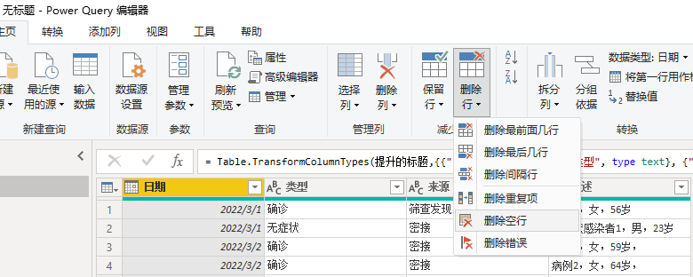
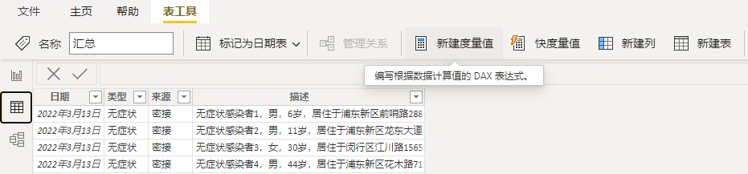
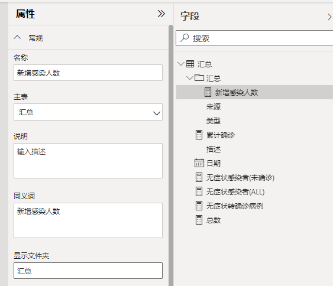
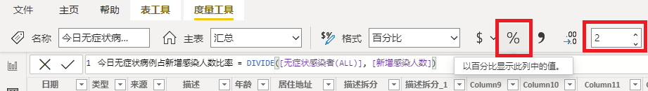

Power BI创建度量值-汇总，占比
使用Power BI Desktop工具创建报表来对业务数据进行加工、处理、分析和呈现。我们使用上海疫情数据集为例，手把手创建一个多维度的报表。
报表结果：
{kind=link}
数据准备
获取数据文件
- 从以下位置下载Excel数据文件 covid-19-case-sample.xlsx.
- Excel表格中的数据结构如下：
| 日期 | 类型 | 来源 | 描述 |
|---|---|---|---|
使用Power BI Desktop连接到Excel数据源
使用Power BI Desktop连接到Excel数据源。
- Power BI Desktop
- 获取数据
- Excel
- 转换数据
- 在Power Query编辑器中， 选择删除行，依次选择删除空行，和删除错误。 
- 选择关闭并应用。
在数据选项卡，验证汇总表单中数据已经加载到Power BI Desktop汇总表。
创建度量值
汇总度量值 - 总数
- 总数代表了汇总表单中数据的总和，也就是汇总表单中的总行数。
- 选择数据选项卡， 点击新建度量值。 
- 在公式编辑框中，输入总数的DAX计算方法，我们使用CountRows.
总数 = COUNTROWS('汇总')
汇总度量值 - 累计确诊
- 在总数中， 类型是确诊的数据就是累计确诊的值。
- 使用同样方法，新建度量值。
- 在公式编辑框中，输入累计确诊的计算方法。
累计确诊 = CALCULATE([总数],'汇总'[类型] = "确诊")
汇总度量值 - 其他值
依此类推， 我们依次创建其他度量值。
无症状感染者(ALL)：
无症状感染者(ALL) = CALCULATE([总数],'汇总'[类型] = "无症状")
无症状转确诊病例：
无症状转确诊病例 = CALCULATE([总数],'汇总'[来源] = "无症状转换")
无症状感染者(未确诊)：
无症状感染者(未确诊) = [无症状感染者(ALL)] - [无症状转确诊病例]
新增感染人数： 新增感染人数就是总数去除无症状转确诊的人数。
新增感染人数 = [总数] - [无症状转确诊病例]
筛查发现的新增感染人数：
筛查发现的新增感染人数 = CALCULATE([总数],'汇总'[来源] = "筛查发现")
筛查发现的确诊病例：
筛查发现的确诊病例 = CALCULATE([筛查发现的新增感染人数],'汇总'[类型] = "确诊")
筛查发现的无症状感染者：
筛查发现的无症状感染者 = CALCULATE('汇总'[筛查发现的新增感染人数],'汇总'[来源] = "无症状")
创建文件夹管理汇总度量值
- 选择模型选项卡， 展开属性窗口， 在字段窗口中，点击任意字段名称。
- 在属性窗口中， 定位到显示文件夹， 输入文件夹名称，例如， 汇总。
- 按Enter确认后，可以看到选中字段已经放入了汇总文件夹中。 
- 将其他汇总度量值依次拖入该文件夹。
环比度量值
在报表中，我们往往需要拿现在的数据与以前同时段的数据作比较。俗称同比和环比。
同比，即与历史同一时期比较。比如，2022年5月的销售数据与2021年5月的销售数据作比较。观察今年和去年相对发展水平的变化。
环比，与上一个统计周期比较。一般以周，月为统计周期，比如，2022年5月的销售数据与2022年5月的销售数据比较，反应本期与上期的变化情况。
在Power BI中，用作计算同期的筛选函数有PARALLELPERIOD 和DATEADD 。
在疫情数据中，我们要观察今日新增与昨日新增的变化情况。
昨日新增
昨日新增数 = CALCULATE([新增感染人数],DATEADD('汇总'[日期],-1,DAY))
今日新增
今日新增数 = CALCULATE([新增感染人数],DATEADD('汇总'[日期],0, DAY))
今日新增较昨日新增变化数
今日新增较昨日新增变化数 = [今日新增数]-[昨日新增数]
今日新增数单日增长率
今日新增数单日增长率 = Divide(([今日新增数]-[昨日新增数]),[昨日新增数])
占比度量值 - 今日无症状病例占新增感染人数比率
- 计算比例，我们使用
DIVIDE函数，并将分子/分母传入参数中。 - 在数据选项卡， 点击新建度量值。
- 在公式编辑框中，输入
今日无症状病例占新增感染人数比率的计算方法。 - 选择以百分比显示此列中的值。 
今日无症状病例占新增感染人数比率 = DIVIDE([无症状感染者(ALL)], [新增感染人数])
占比度量值 - 其他值
依此类推， 我们依次创建其他度量值。
筛查发现占新增感染人数的比率：
筛查发现占新增感染人数的比率 = DIVIDE([筛查发现的新增感染人数], [新增感染人数])
无症状转确诊病例占无症状感染者比率：
无症状转确诊病例占无症状感染者比率 = DIVIDE([无症状转确诊病例], [无症状感染者(ALL)])
无症状转确诊病例占确诊病例比率：
无症状转确诊病例占确诊病例比率 = DIVIDE([无症状转确诊病例], [累计确诊])
无症状感染者（未确诊）占总感染人数比率：
无症状感染者（未确诊）占总感染人数比率 = DIVIDE([无症状感染者(未确诊)], [新增感染人数])
死亡占确诊比率：
死亡占确诊比率 = DIVIDE([死亡人数], [累计确诊])
创建文件夹管理占比度量值
同样方法创建文件夹来组织占比度量值。
总结
我们以疫情数据集为例，在Power BI Desktop中使用新建度量值来创建了分类汇总数据和占比数据， 其中用的了COUNTROWS, CALCULATE 和DIVID函数。在模型中，我使用显示文件夹功能将度量值按类别放到不同的文件夹中。